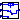
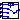

Blocks that are described with boolean and logic statements and operations
Extends from Modelica.Icons.Package (Icon for standard packages).
| Name | Description |
|---|---|
| NegCurLogic | Negative current logic block |
| HV_GATE | Passes through the higher value of the two inputs |
| LV_GATE | Passes through the lower value of the two inputs |
|  Relay | Relay, y = if u1 > 0 then u2 else u3 |
|  Relay3 | Relay, y = if u1 > Vov then u3 elseif u1 < -Vov then u4 else u2 |
Negative current logic block
| Name | Description |
|---|---|
| RC_rfd | |
| nstartvalue |
| Name | Description |
|---|---|
| Vd | |
| Efd | |
| XadIfd |
Passes through the higher value of the two inputs
Extends from Modelica.Blocks.Math.Max (Pass through the largest signal).
| Name | Description |
|---|---|
| u1 | Connector of Real input signal 1 |
| u2 | Connector of Real input signal 2 |
| y | Connector of Real output signal |
Passes through the lower value of the two inputs
Extends from Modelica.Blocks.Math.Min (Pass through the smallest signal).
| Name | Description |
|---|---|
| u1 | Connector of Real input signal 1 |
| u2 | Connector of Real input signal 2 |
| y | Connector of Real output signal |
Relay, y = if u1 > 0 then u2 else u3
| Name | Description |
|---|---|
| u1 | |
| u2 | |
| u3 | |
| y |
Relay, y = if u1 > Vov then u3 elseif u1 < -Vov then u4 else u2
| Name | Description |
|---|---|
| Vov | Threshold for relay |
| Name | Description |
|---|---|
| u1 | |
| u2 | |
| u3 | |
| y | |
| u4 |